Ørkenkappløp
Dette er et spill for to, der en papegøye og en løve kjemper om å komme først gjennom ørkenen. Hver spiller må trykke en tast så fort og ofte som mulig for å flytte figuren sin, og den som kommer først til kanten av skjermen vinner.
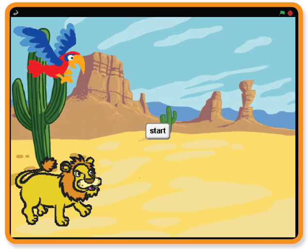
| Sjekkliste | Følg instruksjonene på lista. Huk av etter hvert. |
| Test | Klikk på det grønne flagget for å teste koden. |
| Lagre | Husk å lagre koden når du har lagt til noe nytt. |
Steg 1: Lag en scene og legg til figurer
Sjekkliste
- Legg til en ny figur: velg lion1-a fra Animals-mappen.
- Legg så til enda en ny figur: velg Animals/parrot1-a.
- Klikk på Scene og hent riktig bakgrunn fra Nature/desert.
Steg 2: La løven og papegøyen bevege seg
Sjekkliste
- Få dyrene til å bevege seg.
Velg først løvefiguren og få den til å gå [ 4 ] steg når du trykker L-tasten.
Velg så papegøyefiguren og la den gå [ 4 ] steg når du trykker A-tasten
 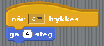
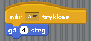
Test prosjektet
- Trykk på det grønne flagget.
Beveger løven og papegøyen seg over skjermen når du trykker på A og L?
Lagre prosjektet
Steg 3: Start kappløpet
Nå må vi kjøre i gang kappløpet og kåre en vinner. Vi begynner med å lage startknapp.
Sjekkliste
- Legg til en ny figur. Velg Things/button. Flytt den til midten av scenen.
- Klikk Drakter og Rediger.
Klikk på T og legg til teksten ‘start’. Det er mulig du må endre bokstavtype og størrelse. Vi har her valgt Arial 12. Du kan flytte på teksten ved å holde nede den svarte firkanten og flytte på musa.
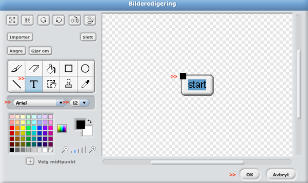 - Legg nå til et skript som viser figuren når spillet starter:
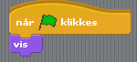 - I tillegg vil vi ha en knapp som teller ned fra 3, sier ‘LØP’ og deretter blir skjult når den klikkes. Dette ordner du med følgende skript:
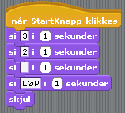
Test prosjektet
- Trykk på det grønne flagget og trykk på startknappen.
Teller knappen ned? Sier den ‘LØP’? Blir den borte?
Lagre prosjektet
Sjekkliste
- For å vite når kappløpet har startet og sluttet lager vi en variabel med navnet kappløp. Fjern avhukingen til venstre for variabelen, slik at den ikke vises på scenen.
- Sett ‘kappløp’ til [ 0 ] når spillet startes.
Forandre flaggskriptet slik:
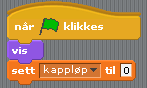 - Når nedtellingen er ferdig og løpet begynner, forandrer vi verdien til 1. Dette gjør du ved å legge til blokken Sett ‘kappløp’ til [ 1 ] under si ‘1’ i ‘1’ sekunder i skriptet som starter med når ‘kappløp’ klikkes.
- Så må vi lage en regel som sier at figurene bare får lov til å bevege seg når løpet har startet – det vil si når kappløp har verdien 1. Klikk først på papegøyefiguren. Så legger du til:
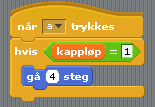 - Gjenta det samme for løvefiguren (punkt 9).
Test prosjektet
- Trykk på det grønne flagget.
Kan løven og papegøyen bare flytte seg når nedtellingen er ferdig?
Lagre prosjektet
Steg 4: Avslutt kappløpet
Nå vil vi vite hvem som vinner kappløpet, og i tillegg gjøre klart for en ny runde.
Sjekkliste
- Legg til en blokk i papegøyens skript som setter ‘kappløp’ til [ 0 ] hvis figuren berører kanten av skjermen.
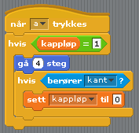 - Spill så inn en lyd som skal avspilles hvis papegøyen vinner. Trykk Lyder og Opptak og spill inn en morsom trudelutt! Opptaket starter når du har klikket på den røde rundingen. Klikk OK når du er ferdig, og gi den et navn – for eksempel Polly.
- Så legger du til blokkene som vil spille lyden og la papegøyen fortelle at den vant:
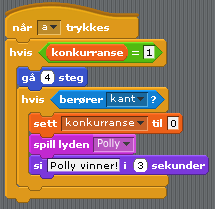 - Gjenta steg 2 og 3 for løven.
Test prosjektet
- Trykk på det grønne flagget.
Kan du trykke på startknappen og deretter bevege dyrene med tastene P og L?
Kommer riktig vinnerlyd og melding opp på skjermen?
Lagre prosjektet
Steg 5: Nullstill spillet
Når kappløpet er over må vi fortelle de andre figurene at spillet er over og nullstille spillet, slik at er klart for en ny runde.
Sjekkliste
- Klikk på papegøyefiguren og legg til en blokk som sender melding ‘avslutt’ etter at figuren sier den har vunnet.

- Vi trenger nå et nytt skript som lytter etter denne avslutningsmeldingen og flytter papegøyen tilbake til start.
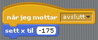 - Legg til det samme skriptet for løven. Test forskjellige x-verdier for å være sikker på at løven og papegøyen starter fra samme sted.
- For at figurene skal stå på startstreken når kappløpet starter den aller første gangen må vi også legge til samme blokk under flaggskriptet.
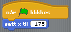 - For at spillerne skal kunne klikke i gang nye runder må passe på at start-knappen kommer etter hver avsluttet runde. Klikk på figuren og legg til et skript som viser knappen når avslutningsmeldingen er mottatt.
Test prosjektet ditt
- Klikk på det grønne flagget.
Spille mot en venn. En av dere styrer papegøyen ved å trykke A, og den andre løven ved å trykke L?
Lagre prosjektet
Du har fullført alle basisaktivitetene, GODT GJORT!
Prøv deg gjerne på en utfordring også!
Utfordring: Legg til en rakett!
- Legg til en rakett som kan brukes én gang per kappløp og som flytter papegøyen eller løven 30 steg på en gang.
- Legg til en ny drakt med ild som kommer ut bak hver figur. La denne aktiveres når raketten avfyres.
- Lag en lyd som figuren kan gi fra seg når raketten avfyres.
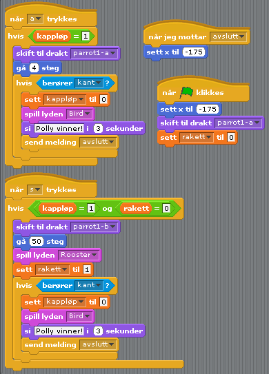